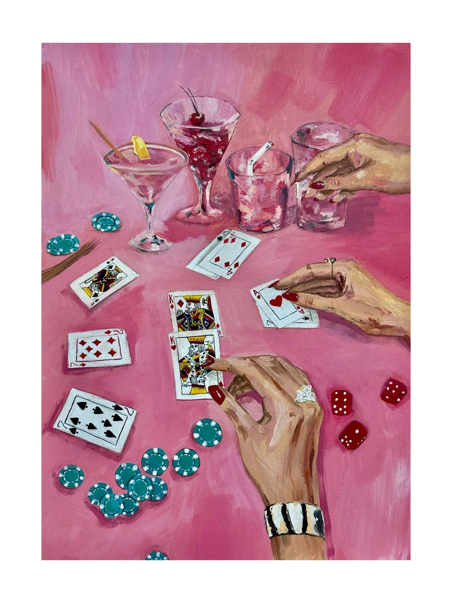
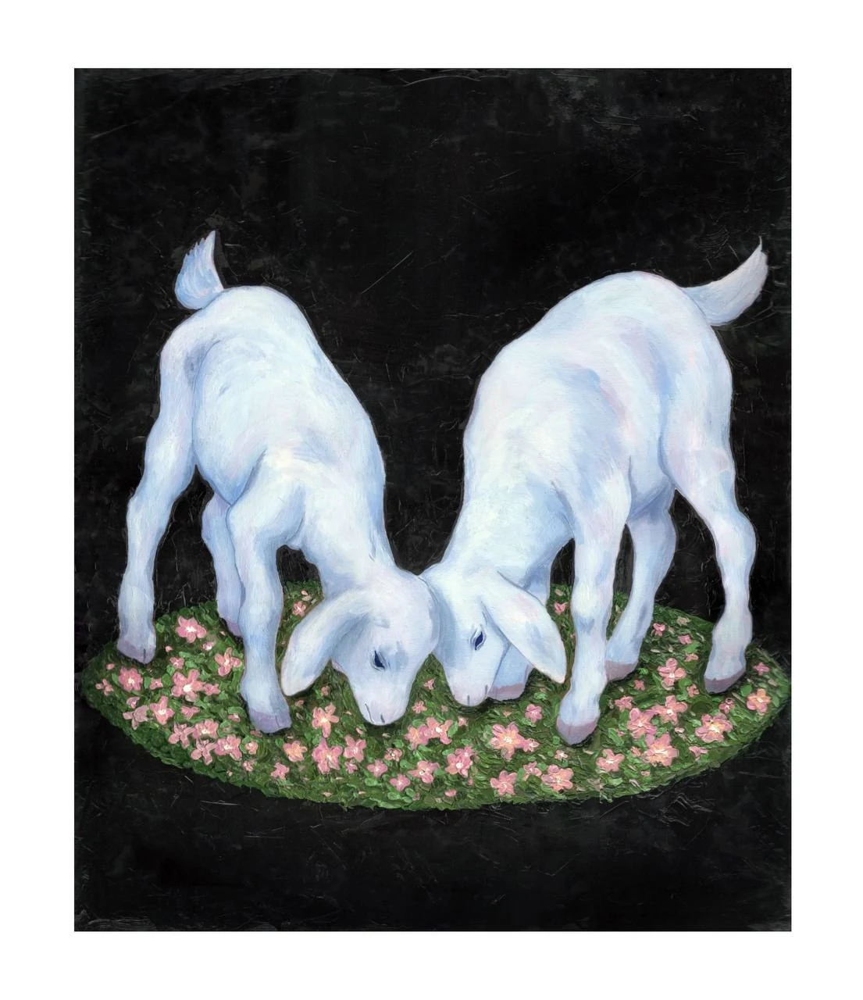
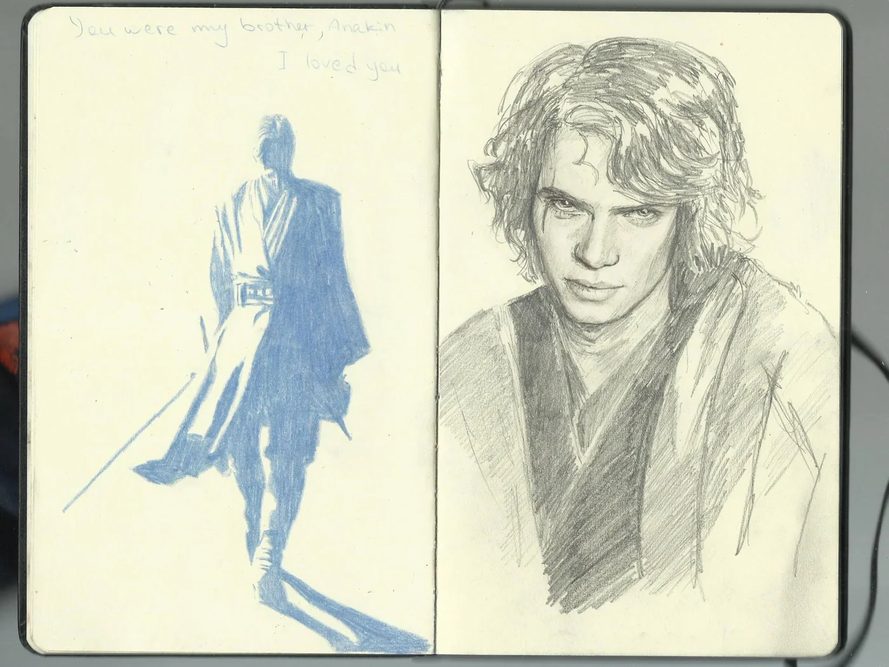
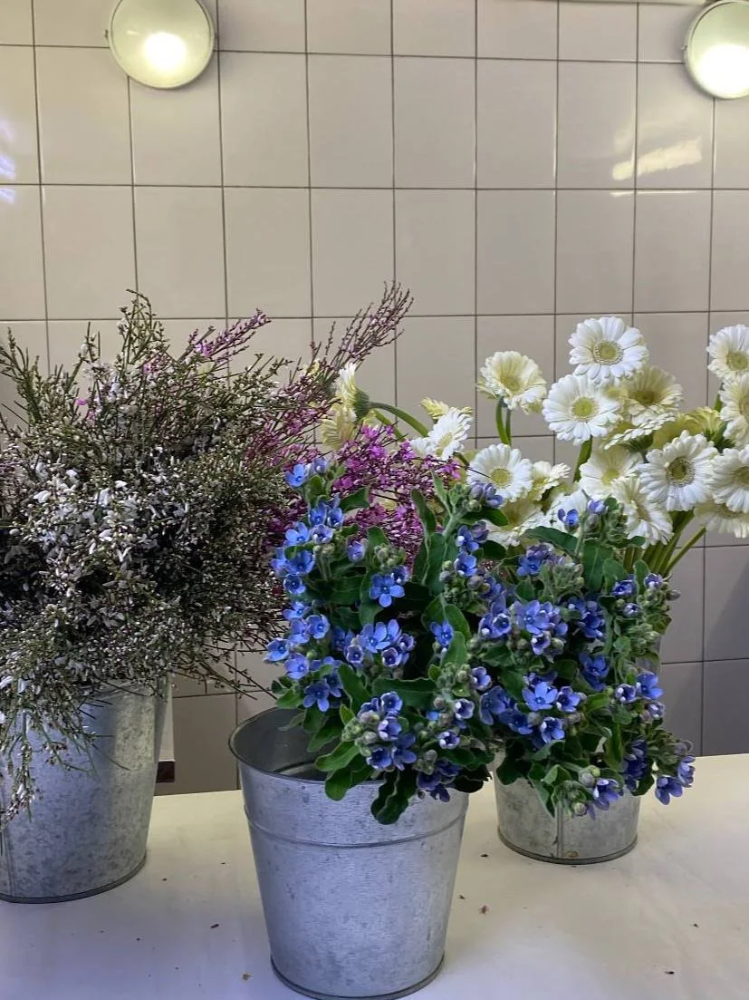

город
Петербург, Волгоград, дворы, вода, многоэтажки и символы, которые живут в среде.
u mean, this is sexy? · 2026
Диана собирает в холсты то, что не хочется превращать в гладкий текст: городскую тревогу, поп‑культурные привязанности, цветы, любовь, смешные травмы и моменты, которые сложно объяснить напрямую.




о Диане
Диана — художница и студентка‑переводчик. В её собственном описании живопись работает как ещё один способ перевода: не слов, а состояний, мыслей и того неосязаемого, что трудно зафиксировать даже ментально.
Человеку свойственно внутри себя раскладывать информацию по полочкам. Это происходит по нескольким причинам. Одна из них — это желание управлять информацией и быстро находить ответы на вопросы. Вторая причина — это страх. Страх едва слышным голосом нашёптывает – когда всё разложено по полочкам, ты в любой момент сможешь этим воспользоваться. Это хорошо, но только во время раскладывания по полочкам уходит способность чувствования жизненных ситуаций. Раскладывание по полочкам блокирует интуицию. Таким образом, человек незаметно для себя разучивается думать. Он бездумно пользуется информацией, которая бережно хранится на полочках внутри сознания. В жизни это проявляется в виде обычного упрямства или глупости. Ты сколько человеку не объясняй, а он знает лучше других.
«Картины — это ещё один способ перевода. Только не слов, а состояний»
Петербург, Волгоград, дворы, вода, многоэтажки и символы, которые живут в среде.
«Клан Сопрано», балет, Star Wars, мемы и фанатская память как личная мифология.
Тон без галерейного снобизма: живой, смешной, иногда резкий, но всегда очень свой.
Цветы, ягнята, влюблённость, поддержка и маленькие уязвимые сюжеты без сахарности.
gallery
Можно смотреть как каталог, фильтровать по темам или раскрывать карточки как записи из дневника. Красота всегда будет глазах смотрящего.
вкусности из телеги
"Знаете, я полтора семестра проучился в колледже. Я понимаю Фрейда, знаком с концепцией терапии. Но в моём мире такие вещи не прокатывают! Могу я быть счастливей? Да. Наверное. Все могут.
— У вас депрессия? Вы чувствуете себя подавленным?
— Ну... с тех пор, как улетели утки... Наверное." - Клан Сопрано

Фанатские вселенные сначала появляются в карандаше — не как мерч, а как личное переживание сцены.

Флористика, холодный свет, смены перед 8 марта и странная красота бывшего цеха.
Большие образы работают сильнее, когда вписаны в повседневность: дом, трава, окна, город.
#наличие@diartka
Статусы перенесены из Telegram‑экспорта и исходного каталога. Перед оплатой или отправкой лучше написать Диане: наличие может измениться.
Написать в Telegramконтакты
Заказы сейчас поставлены на паузу, но доступные холсты можно уточнить. Для живого контакта лучше Telegram: там же находится основное портфолио‑дневник.